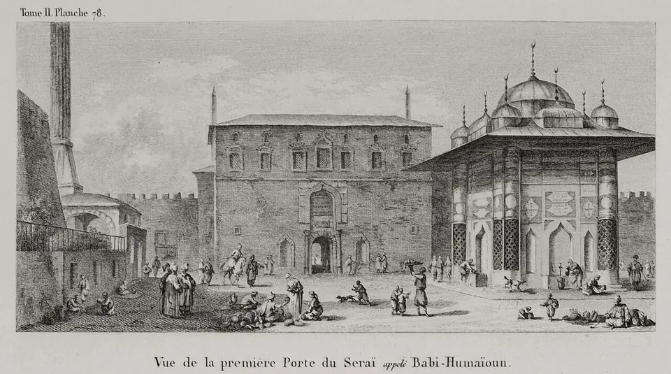

Wars & Captivity
Imperial Gate of Topkapı Palace (Bâb-ı Hümâyûn)
Polish embassies rode through this gate into the sultans' palace – and tradition links it with the memory of Hetman Żółkiewski, who fell at Cecora.


- Theme
- Wars & Captivity
- District
- Fatih
- Period
- 1620
- Visiting
- Open to visitors
The story
Hetman Stanisław Żółkiewski, the victor of Klushino, fell at Cecora in the autumn of 1620 – and his head, by the custom of war at the time, was sent to the sultan's palace; one account links it with this very gate.
At Cecora (Ţuţora) in Moldavia the Polish army was routed, and the 73-year-old Grand Hetman and Chancellor of the Crown was killed in early October during the retreat. According to the historian Jerzy Besala, Iskender Pasha sent the hetman's head to the padishah, the young Osman II, and it was placed ‘high in the sultan's golden palace’.
How to visit
The gate stands just behind Hagia Sophia, with the grand Fountain of Ahmed III (1728) in front of it. Stand by the fountain and look at the gate: inscriptions run above the great arch, with niches on either side. The gate leads into the palace's First Court, which you can enter without a museum ticket; check opening times before you go.
People
- Stanisław Żółkiewski
- Regina Żółkiewska
- Osman II
- Mehmed II
Location
Fatih, Istanbul · Coordinates: 41.00861, 28.98146